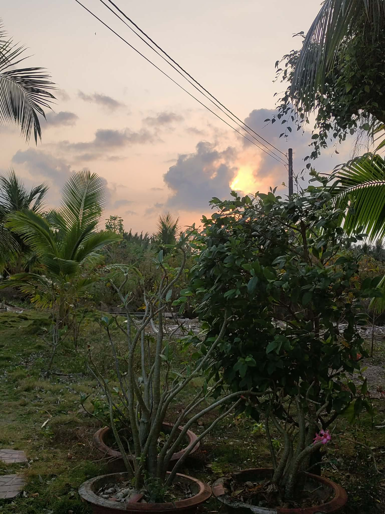
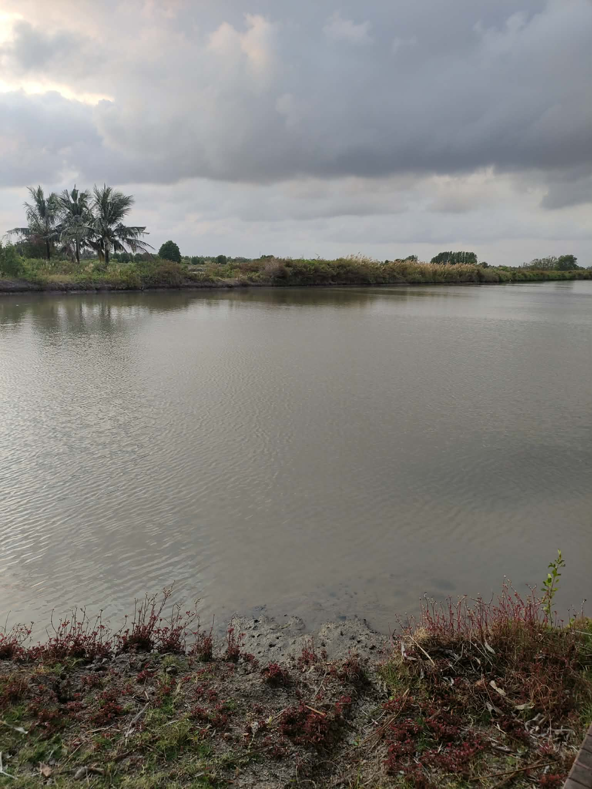
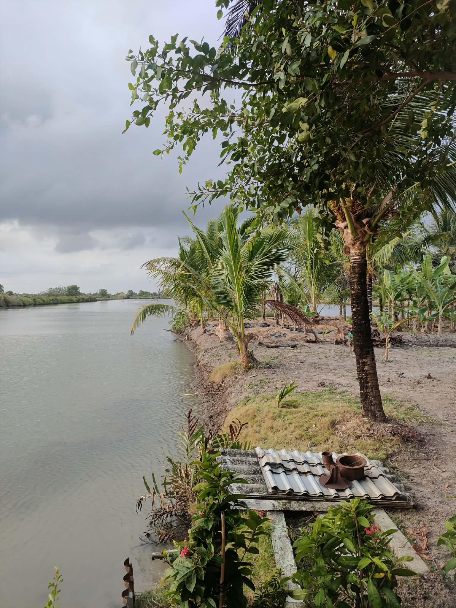
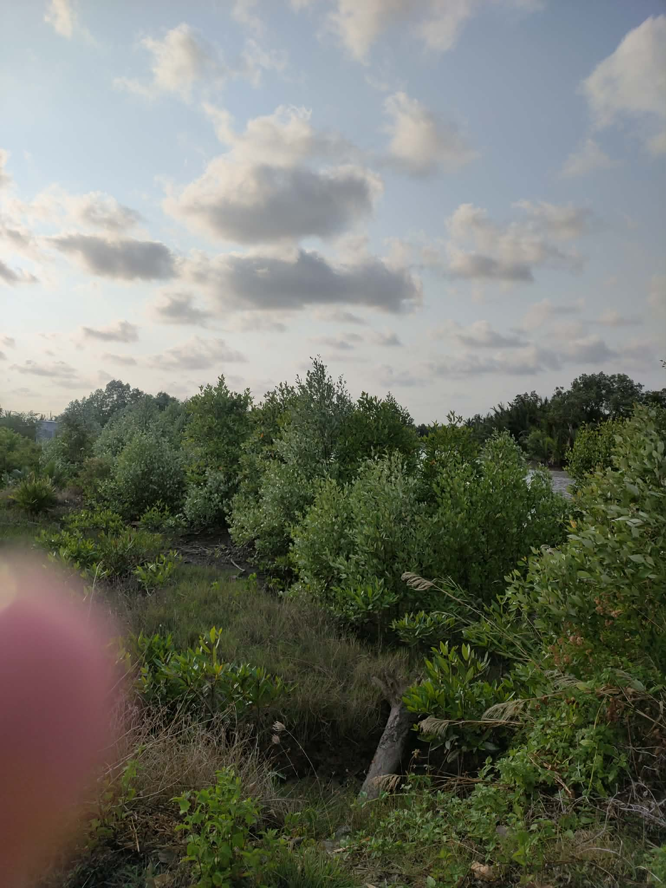
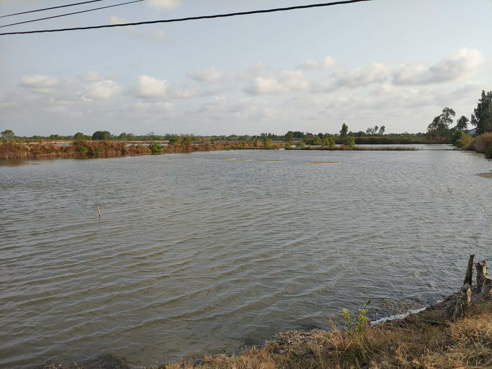
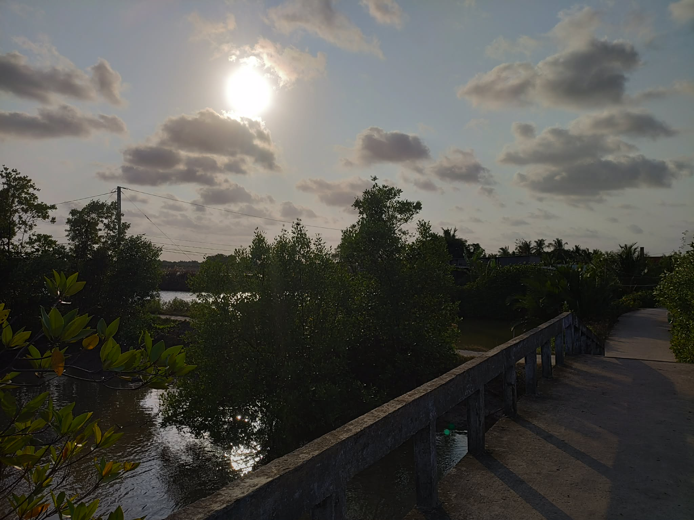
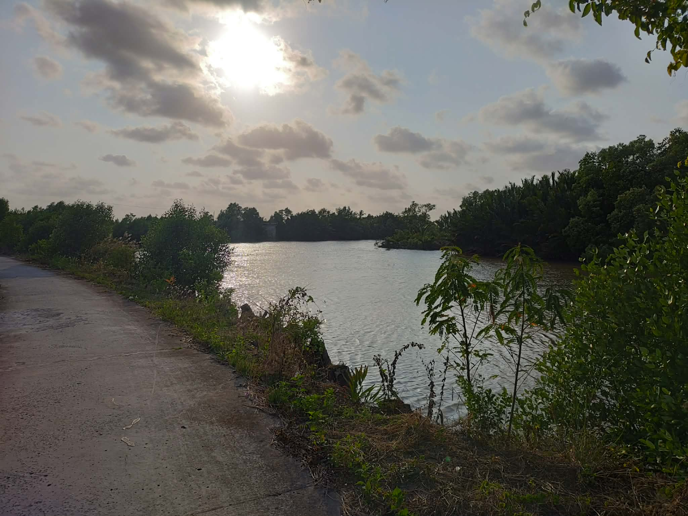
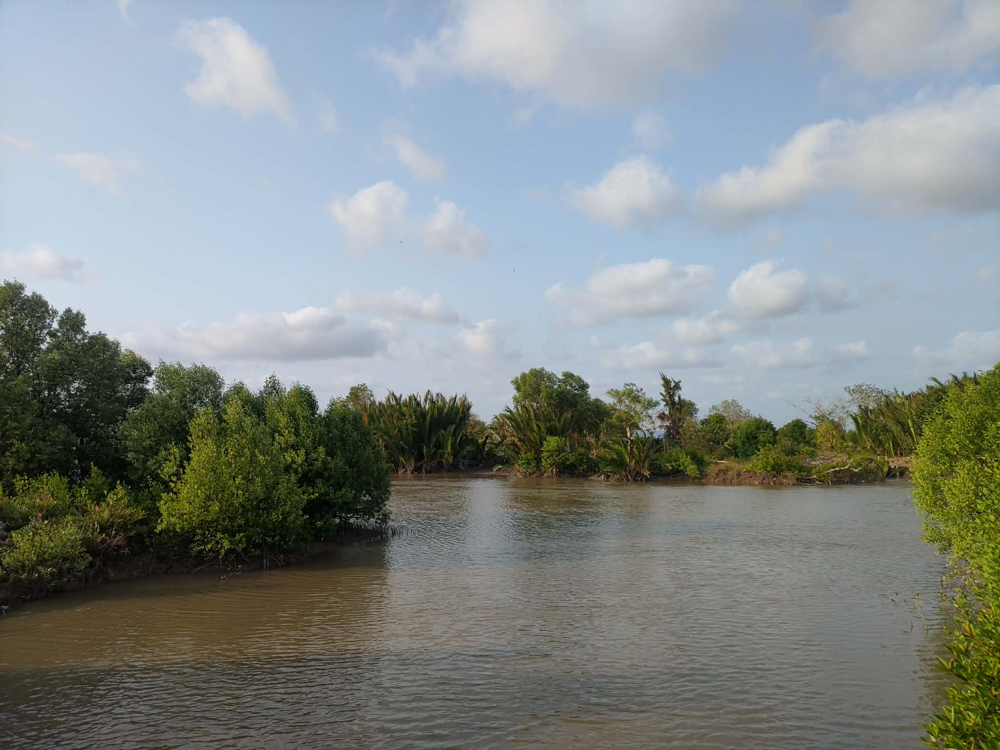
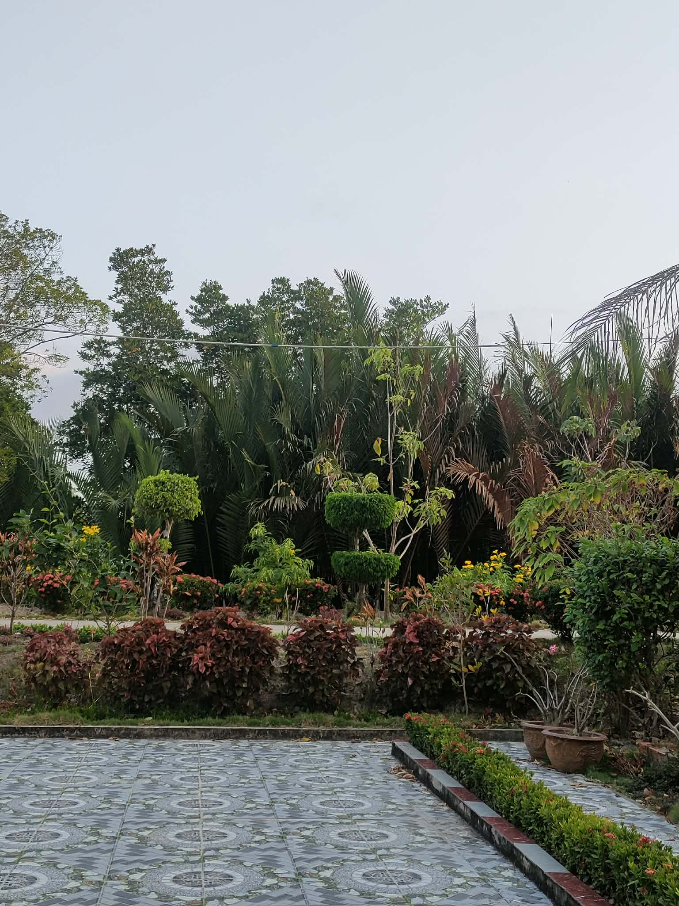

Tết Nguyên Đán là dịp lễ quan trọng nhất trong năm của người Việt Nam. Tại Cà Mau - mảnh đất cực Nam của Tổ quốc, ngày Tết mang những hương vị và màu sắc rất riêng biệt của vùng sông nước miền Tây.
Hãy cùng khám phá không khí đón xuân rộn rã, thưởng thức những món ăn đặc sản và tìm hiểu nét đẹp văn hóa của người dân quê hương Cà Mau qua trang web này nhé!
Cà Mau những ngày giáp Tết khoác lên mình một chiếc áo mới. Khắp các ngả đường, bến sông đều tấp nập ghe xuồng chở hoa mai, vạn thọ, cúc mâm xôi... Các khu chợ nổi nhộn nhịp bán mua các đặc sản phục vụ ngày Tết.
Người dân Cà Mau nổi tiếng hiền hòa, hiếu khách. Dù làm ăn xa ở đâu, cứ mỗi độ xuân về, mọi người lại thu xếp lên những chuyến xe, chuyến phà để trở về đoàn tụ bên mâm cơm gia đình.
Mâm cỗ ngày Tết ở Cà Mau không thể thiếu nồi thịt kho tàu (thịt kho hột vịt) và nồi canh khổ qua dồn thịt với ý nghĩa mong mọi cái khổ trong năm cũ qua đi.
Đặc biệt, nhắc đến Cà Mau là phải nhắc đến các loại đặc sản trứ danh dùng để đãi khách ngày xuân như:
Ngày Tết ở Cà Mau mang đậm dấu ấn của văn hóa sông nước. Những chợ hoa trên sông là một hình ảnh đẹp khó quên, nơi ghe thuyền chở đầy hoa rực rỡ đậu san sát nhau.
Vào những ngày đầu năm mùng 1, mùng 2, mùng 3, mọi người mặc quần áo mới đi chúc Tết ông bà, họ hàng và đi lễ chùa, miếu (như Chùa Bà Thiên Hậu, Chùa Phật Tổ) để cầu mong một năm mưa thuận gió hòa, quốc thái dân an và tôm cá đầy khoang.









Gửi những lời chúc tốt đẹp nhất đến với chúng tôi qua biểu mẫu dưới đây: